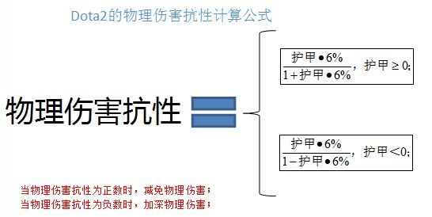

1.3负护甲物理伤害抗性的计算公式
负护甲带来的物理伤害抗性也是负的，从伤害的数值来看，正护甲减免的物理伤害百分比和负护甲加成的物理伤害是相同的！
即护甲为1时，物理伤害抗性=5.66%；护甲为-1时，物理伤害抗性=-5.66%；
即护甲为2时，物理伤害抗性=10.71%；护甲为-2时，物理伤害抗性=-10.71%；
负护甲物理伤害抗性计算公式为

1.4物理伤害公式隐藏的秘密
虽然负护甲公式和正护甲公式有略微差异，但是！但是正护甲和负护甲的机制和结果，却大相径庭！
护甲为正时，物理伤害抗性为增函数，随着护甲的增加物理伤害的减免也随之增加，极限是100%；当护甲趋向于无穷大时，伤害减免趋向于100%；
护甲为负时，物理伤害抗性为减函数，函数图像和护甲为正时的图像关于y轴对称，意味着当护甲趋向与负无穷大时，伤害加深趋向于100%；
简单通俗地说，50点护甲的龙骑肉成牛，-50点护甲的小冰女也不至于脆成纸(实际上-50点护甲加深了75%的伤害)
当护甲为负数时，Do1和Do2的护甲机制有区别；当护甲为正数时，Do1和Do2的护甲机制完全相同;
在Dota1，当护甲为负时，伤害加深公式是=1-(1-6%)^N，N表示护甲的绝对值， 比如-1点护甲，伤害加深=1-96%的1次方=6%； -2点护甲，伤害加深=1-96%的2次方≈11.64%